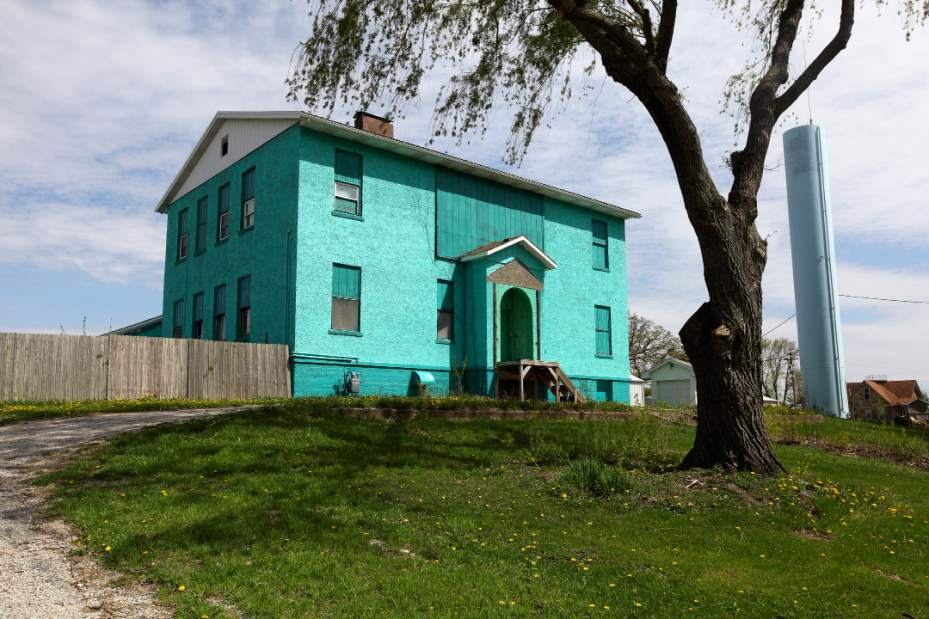
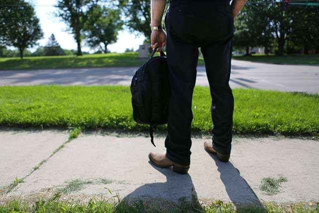
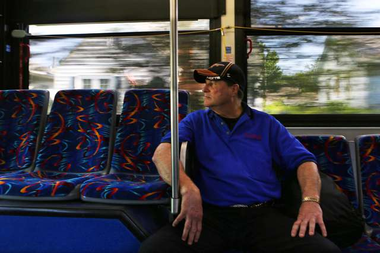

The 'Boys' in the Bunkhouse
Toil, abuse and endurance in the heartland.
_________________________________________________________________________________
THIS LAND BY DAN BARRY - March 9, 2014
WATERLOO, IOWA -- A man stands at a bus stop. He wears bluejeans, cowboy boots, and a name tag pinned like a badge to his red shirt. It says: Clayton Berg, dishwasher, county sheriff's office.

He is 58, with a laborer's solid build, a preference to be called Gene and a whisper-white scar on his right wrist. His backpack contains a jelly sandwich, a Cherry Coke and a comforting pastry treat called a Duchess Honey Bun.
The Route 1 bus receives him, then resumes its herky-jerky journey through the northeastern Iowa city of Waterloo, population 68,000. He stares into the panoramic blur of ordinary life that was once so foreign to him.
Mr. Berg comes from a different place.
For more than 30 years, he and a few dozen other men with intellectual disabilities - affecting their reasoning and learning - lived in a dot of a place called Atalissa, about 100 miles south of here. Every morning before dawn, they were sent to eviscerate turkeys at a processing plant, in return for food, lodging, the occasional diversion and $65 a month. For more than 30 years.
Their supervisors never received specialized training; never tapped into Iowa's social service system; never gave the men the choices in life granted by decades of advancement in disability civil rights. Increasingly neglected and abused, the men remained in heartland servitude for most of their adult lives.

This Dickensian story - told here through court records, internal documents and extensive first-time interviews with several of the men - is little known beyond Iowa. But five years after their rescue, it continues to resound in halls of power. Last year the case led to the largest jury verdict in the history of the Equal Employment Opportunity Commission: $240 million in damages - an award later drastically reduced, yet still regarded as a watershed moment for disability rights in the workplace. In both direct and subtle ways, it has also influenced government initiatives, advocates say, including President Obama's recent executive order to increase the minimum wage for certain workers.
Overall, the Atalissa case has been a catalyst for change, according to Senator Tom Harkin, Democrat of Iowa, a longtime champion of people with disabilities, who still struggles with what these vulnerable men endured in his home state.
"I hate to see what happened to them," the senator says. "But, by gosh, something might happen from them."
The dark tale of Mr. Berg and his work mates has spurred introspection in Atalissa and beyond about society's perception of those with disability. About what is noticed, what is not and what remains in need of constant vigilance.
"The turkey plant case has really haunted all of us," says Curt Decker, the executive director of the National Disability Rights Network. "This is what happens when we don't pay attention."
This Waterloo bus does not go to Atalissa. But the man in cowboy boots, rocking to its gentle sway, needs only to notice that telltale scar on his wrist, and he is instantly returned.